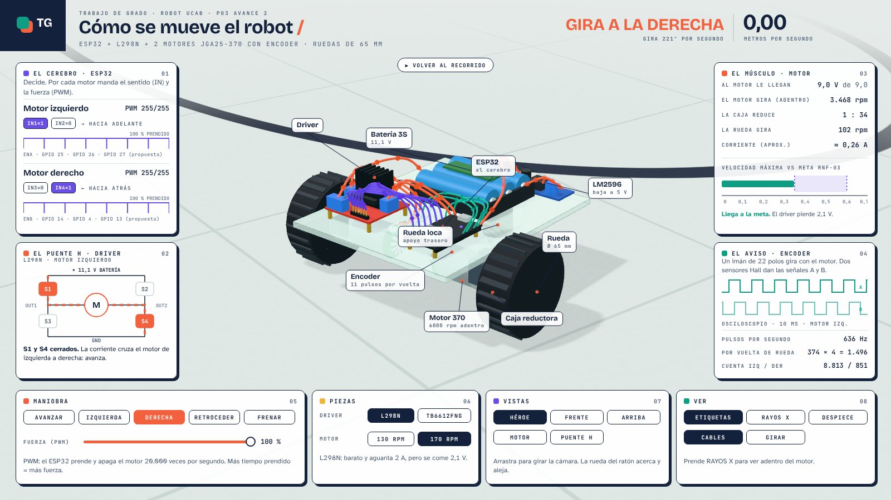
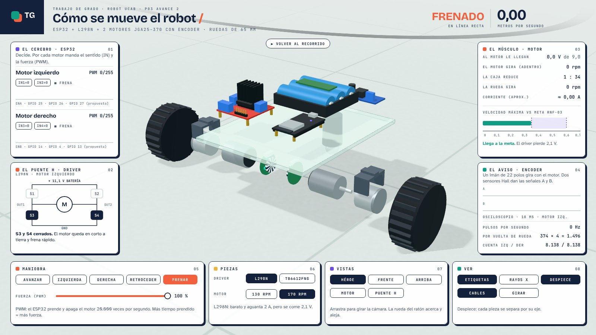

Prototipo P03 · Cinemática Diferencial · Avance 2
P03: Cómo se mueve el robot, pieza por pieza
Simulador 3D en Vivo (Tracción y Encoders)
Abrir en Pantalla CompletaCódigo Fuente ESP32 (.ino)
Lectura de encoders por interrupción de hardware y control PWM a 20 kHz.
Resultados de Pruebas en Laboratorio
Pendiente por llegada de componentesVoltaje Real y Caída del Driver L298N
Medición osciloscópica y con multímetro de la caída de tensión en saturación de los transistores bipolares del L298N (estimada en 2,1 V en simulación).
Esperando hardwareResolución de Encoders (Pulsos/Rev)
Verificación de los 11 pulsos base del imán × relación 1:21,3 = 234,3 pulsos por vuelta de rueda mediante interrupciones en GPIOs del ESP32.
Esperando hardwareDeslizamiento y Fricción de Ruedas
Cálculo del deslizamiento longitudinal de las ruedas de goma Ø 65 mm sobre granito pulido bajo carga real de masa con batería y chasis 3D.
Esperando hardwareCómo interactuar con el simulador
Maneja el robot virtualmente con el teclado o interactúa con el panel de control lateral.
- Elige una maniobraAvanzar, girar, retroceder o frenar. También con las flechas del teclado ↑ ↓ ← →.
- Modula la fuerzaAjusta el control deslizante de PWM (0 a 100%). Observa la respuesta inmediata en voltaje, rpm y m/s.
- Alterna componentesCompara el driver L298N frente al TB6612FNG, y la caja reductora Speed 130 vs Speed 200.
- Simula la batería 3SPrueba con 12,6 V (llena), 11,1 V (nominal) y 9,9 V (descargada) para evaluar la pérdida de torque.
- Modo Rayos XActiva la vista de motor transparente para inspeccionar el imán del encoder de 22 polos y la caja de engranes.
Principios de Operación
Dirección y PWM a 20 kHz
Dos pines lógicos fijan la polaridad del puente H y uno modula el ciclo útil con PWM a 20 kHz, por encima del umbral audible humano.
Puente H de Potencia
Conmuta la alimentación de 12 V a los bornes del motor, permitiendo giro adelante, reversa y frenado dinámico por cortocircuito de armadura.
Reductora Planetaria
El rotor gira a ~3.600 rpm. La caja reductora 1:21,3 multiplica el par torsor y entrega ~170 rpm a las ruedas de tracción.
Encoder de Efecto Hall
Genera 11 pulsos por revolución del motor en canales desfasados 90° (cuadratura), permitiendo registrar 937 transiciones por vuelta de rueda.
Parámetros del Modelo Físico
Ecuaciones cinemáticas y dinámicas implementadas en model.js y verificadas en Colab.
| Parámetro | Valor de Diseño |
|---|---|
| Batería Li-Ion 3S nominal | 11,1 V (rango: 9,9 V a 12,6 V) |
| Caída interna del driver | L298N: 2,1 V · TB6612FNG: 0,5 V |
| Motor DC 370 sin reductora (12 V) | 6.000 rpm nominales |
| Kit Emoshayoga JGA25-371 (Speed 200) | 280 rpm en vacío, reducción 1:21,3 |
| Factor de carga / inercia del robot | 80 % de la velocidad en vacío |
| Resolución de encoder | 11 pulsos/rev rotor × 2 canales en cuadratura |
| Diámetro de rueda / Vía entre ruedas | Ø 65 mm · Vía: 180 mm |
| Velocidad calculada a 100% PWM (L298N) | 9,0 V efectivos · 168 rpm · 0,57 m/s (656 Hz) |
Evidencias Visuales de la Simulación
Capturas del simulador y visualización en modo Rayos X. Toca una para agrandarla.




Firmware de Tracción (ESP32)
Programa para Arduino IDE que orquesta las señales de control de motores y lee los encoders por interrupciones.
Desplegar visor de código fuente en línea
/* P03 · Tracción y Encoders · ESP32 + L298N */
#include <Arduino.h>
const uint8_t PIN_ENA = 25;
const uint8_t PIN_IN1 = 26;
const uint8_t PIN_IN2 = 27;
const uint8_t PIN_ENB = 14;
const uint8_t PIN_IN3 = 4;
const uint8_t PIN_IN4 = 13;
const uint8_t PIN_ENC_IZQ_A = 18;
const uint8_t PIN_ENC_DER_A = 19;
// ... (Código completo disponible al descargar traccion_encoders.ino)Arquitectura del Simulador
- model.js: Ecuaciones de par, voltaje, velocidad angular y pulsos de encoder.
- robot.js: Modelo tridimensional a escala real del chasis y motores.
- console.js y live.js: Paneles interactivos de telemetría y maniobras.
- stage.js: Entorno de renderizado con iluminación y piso.